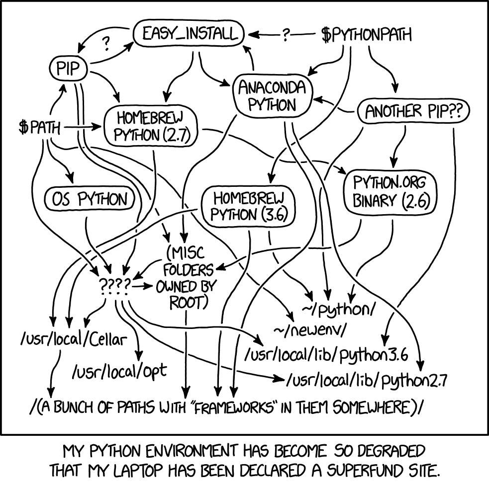
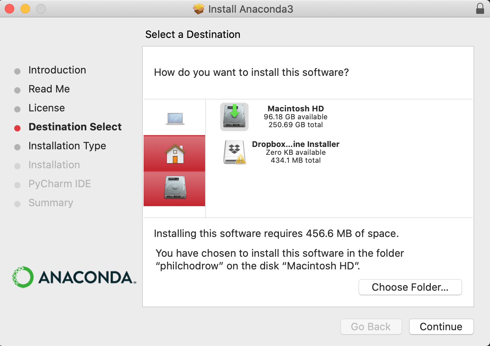
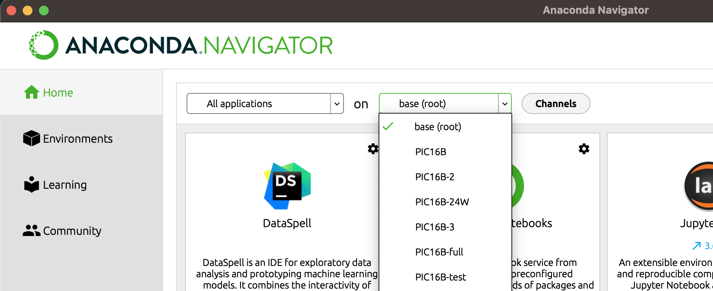
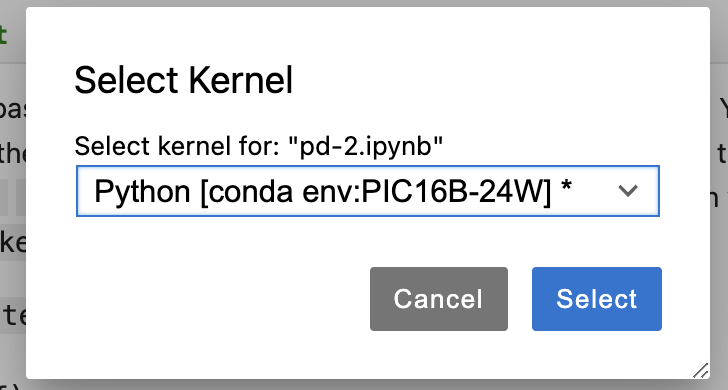

Software Installation
The purpose of this page is to get you set up with the software tools we’ll use in BIOSTAT 203C, including Anaconda, git + GitHub, and Quarto.
1. Install and Configure Anaconda Links to an external site.
An important part of BIOSTAT 203C is navigating the Python package ecosystem.
 https://xkcd.com/1987/
We will do so using the Anaconda distribution of Python. Getting set up with Anaconda is a somewhat detailed process, outlined below.
a. Install Anaconda Links to an external site.
You can find installers for Anaconda here Links to an external site.. Choose the one appropriate to your operating system.
If installing on macOS, do not install Anaconda in the root-level opt directory. It is recommended that you install in the folder directly under your username. This is the same folder in which your “Downloads” folder exists. In some cases, Anaconda may suggest installing in a folder called opt under your username; this is fine.

Example of installing Anaconda to the directory corresponding to your username.
b. Create the BIOSTAT203C-24S Anaconda Environment
Links to an external site.
We will create BIOSTAT203C-24S anaconda environment with specific package versions. They are listed in a .yml file, depending on OS. We will fix the versions of the following Python and other packages throughout the quarter:
- python=3.11.6
- nb_conda=2.2.1
- nb_conda_kernels=2.3.1
- pandas=2.0.3
- matplotlib=3.7.2
- scikit-learn=1.3.0
- seaborn=0.12.2
- plotly=5.18.0
- scrapy=2.8.0
- twisted=22.10.0
- flask=3.0.0
- jinja2=3.1.2
- jupyter_client=7.4.9
- jupyter_core=5.3.0
- jupyter_server=1.23.4
- jupyterlab=3.6.3
- notebook=6.5.4
- jax=0.4 (not available on Windows)
- keras==3 (thorugh pip)
Download BIOSTAT203C-<os>.yml file corresponding to your OS and run the following from the Anaconda Prompt from the directory where the file is located:
conda env create -f BIOSTAT203C-24S-<os>.ymlThis will create a new environment BIOSTAT203C-24S, and I will use that environment in the lectures. Full environment for each OS:
- Windows Links to an external site.
- Mac M1/M2 Links to an external site.
- Ubuntu Linux Links to an external site.
- Generic Links to an external site. – e.g., Mac with Intel chip (sorry, I no longer own one), Windows with non-Intel chip, etc. You may want to change conda’s environment solver to mamba Links to an external site. for faster installation.
Note that an autograder will be in use for this course, set up on Ubuntu Linux.
Installing additional packages Links to an external site.
We will mainly be using the BIOSTAT203C-24S environment throughout the course – changing package versions unless prompted is discouraged. In the future, if you ever attempt to import a package and encounter an error, you may attempt to install it via the Environments tab on Anaconda Navigator. Click on Channels button and add “conda-forge” channel. Then, search for the package you need on the right-hand side (you may need to update the index).
Check the box beside this package, and then click “Apply” to install.
In this course, we’ll primarily demonstrate high-performance computing libraries (e.g., JAX, numba, Keras, TensorFlow, and PyTorch) using Google Colab, which has some significant benefits related to speed of computation. However, you can also try to install these packages via the package manager.
Note: If you want to use command lines to install Python packages in the future, try to follow prompts that look like
conda activate BIOSTAT203C-24S
conda install --channel=conda-forge <package name>rather than the ones that start with pip install. If this sentence didn’t make sense to you, you can ignore it and stick to using Anaconda navigator.
d. Launch JupyterLab Links to an external site.
Now launch Anaconda Navigator and open the “Home” tab. Launch JupyterLab. Select the environment BIOSTAT203C-24S.
 Selecting the PIC16B-24W environment on Anaconda Navigator
Create a new Jupyter notebook. Change the kernel to the BIOSTAT203C-24S environment that you created in Step 1b.
 Selecting the PIC16B-24W environment from within a Jupyter notebook.
e. Verify Links to an external site.
Type the two lines below into your blank Jupyter Notebook and run them, adding in your name. If you do not encounter an error, then your setup was successful. Otherwise, contact the instructor or TA for help.
import pandas as pd
print("My name is [your name] and I installed Anaconda")f. Creating a new environment on Anaconda (optional) Links to an external site.
Sometimes, especially for the term project, you may want to use an environment other than what we have set up for the lectures. You can follow the step below to create a “fresh” environment.
- Open Anaconda Navigator.
- Navigate to the Environments tab.
- Choose “Create.”
- Create a Python 3.11 environment named “BIOSTAT203C-24S-new”.
2. GitHub and GitHub Desktop Links to an external site.
If you don’t have a GitHub account yet, create one on GitHub Links to an external site.. You get a lot of free stuff as a student.
Also download GitHub Desktop
Links to an external site., a graphical client for working with git. If you do not use GitHub Desktop (or another graphical client), you will need to work with git from the command line.
Connect your GitHub Desktop app to your GitHub account.
3. Pick Your Favorite Text Editor Links to an external site.
Text editors allow you to make modifications to plaintext files. They are useful for coding, writing, and any other tasks that require the manipulation of plaintext.
I like to use JupyterLab or Visual Studio Code Links to an external site.. For some reason, my VS code had trouble with Quarto, so I’m going to use JupyterLab.
Sublime Text Links to an external site. and Atom Links to an external site. are also popular. Some people also use Notepad++ but that might not be the best option for beginners. Beyond this course, if you expect to write a significant amount of code in your career then it is worthwhile to find a text editor that you like.
Once you’ve installed a text editor that you like, try opening it up and modifying a text file.
Next, try writing a simple Python file and running it from your editor. To do this, first paste the following into a file called my_script.py:
print("I can run Python scripts from my text editor!")Then, open a terminal window from your editor. In the terminal, write python3 my_script.py and hit enter. You’ll need to ensure that your terminal is in the same location as the file my_script.py.